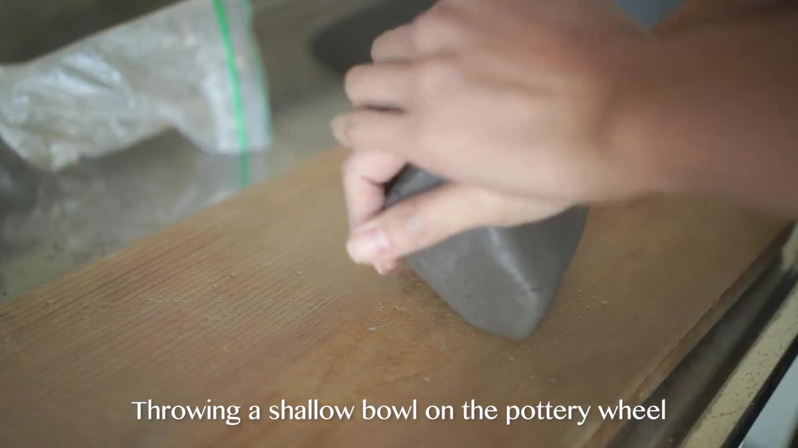
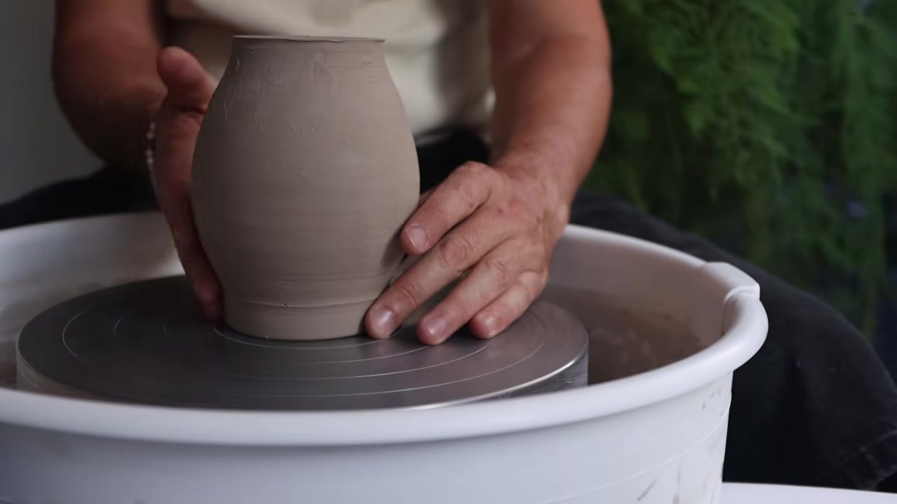
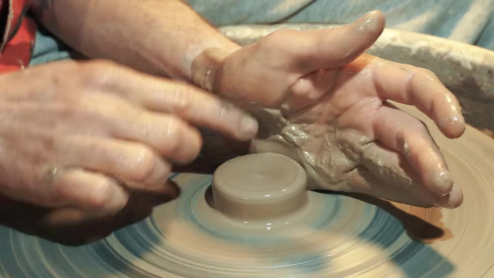
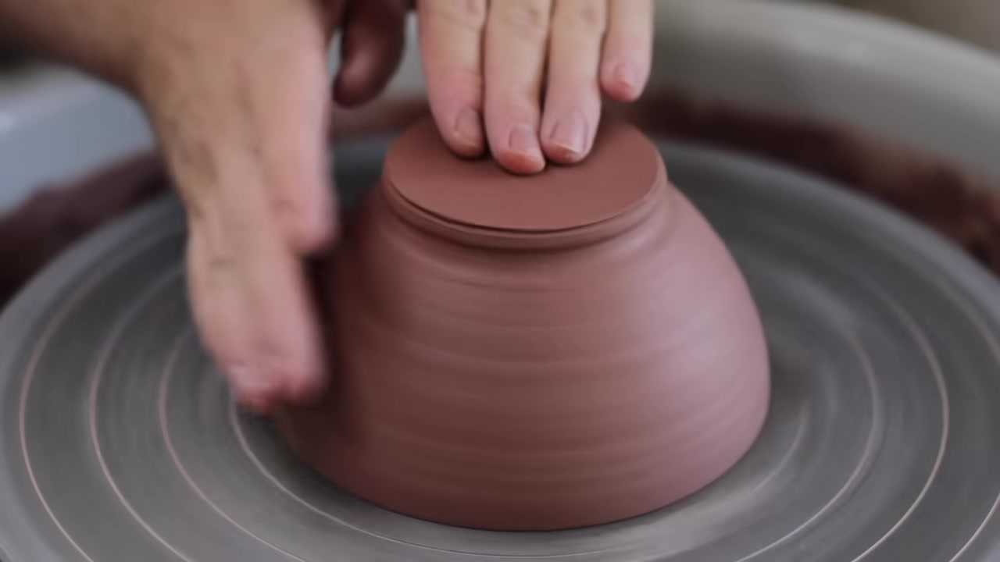
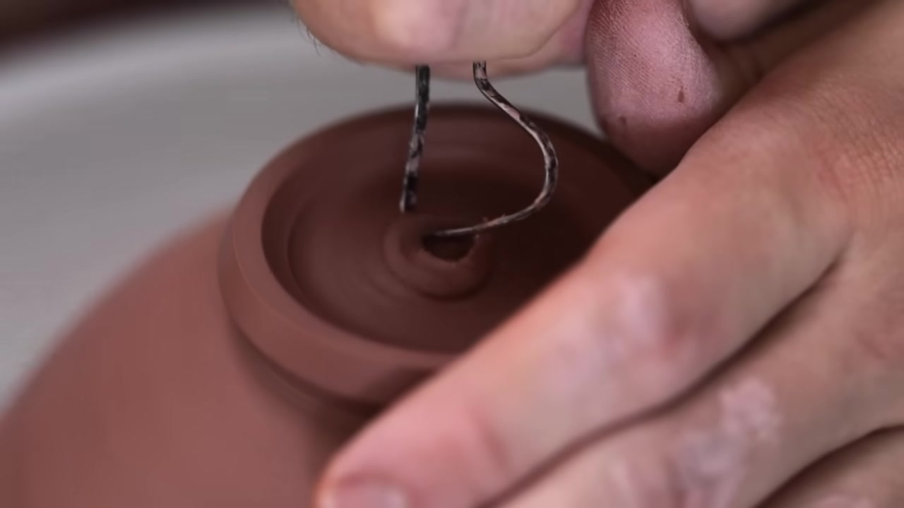
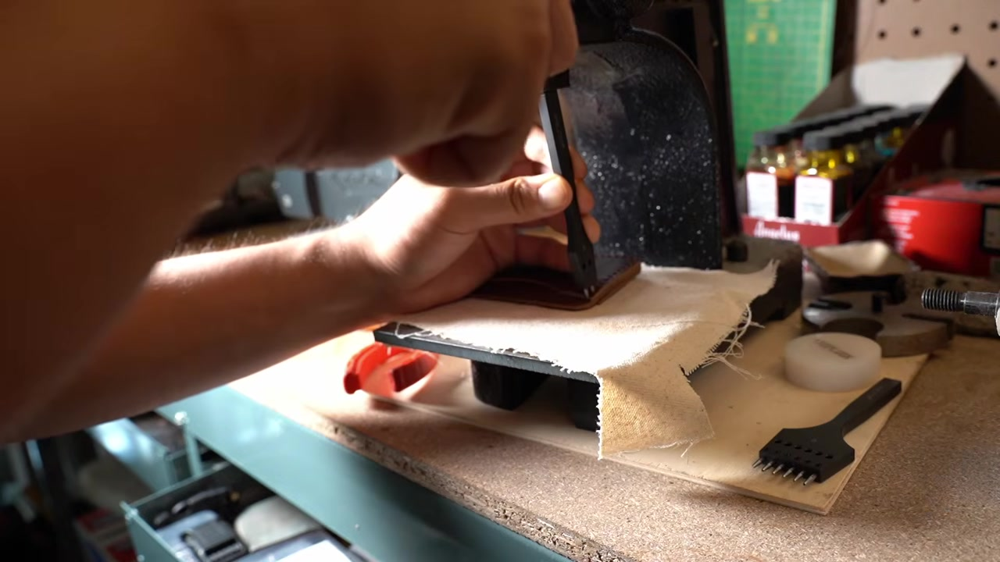
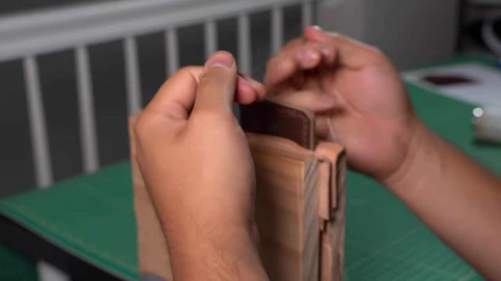

Visual Predict Benchmark — questions that require watching tutorial videos to answer correctly.
All tutorial videos are silent or muted. All videos are muted during evaluation.
2 domains · 4 questions
Target: Florian Gadsby — Throwing and Turning a Pottery Bowl (14 min, ASMR, no narration)
Tutorials: 6 silent videos from 5 creators · 2 questions




You are trimming an upside-down clay bowl on the wheel, steadying it with one hand. What do you do next?
Use a ring-shaped trimming tool to trim the outer side of the upside-down clay bowl, shaving off excess clay.
CORE tool_type: ring/loop trimming tool · action: trim the outer side
BONUS stabilization · consistent_angle
IGNORED direction · order

You are carving a circular indentation into the center of a spinning clay bowl. What do you do next?
Use a small metal tool to trim the inner edge of the foot ring of the clay bowl.
CORE tool_type: small metal tool · action: trim/carve · target: inner edge of foot ring
BONUS consistent_angle · gradual_movement
IGNORED direction · hand_position
Target: Your First Leather Project — Easy Leather Cardholder (8 min)
Tutorials: 4 videos (MAKESUPPLY, Bifold Card Case, Babylon Leather, Beginner Cardholder) · 2 questions

You are using a hand-operated press on a leather piece. What do you do next?
Use saddle stitch to sew the leather pieces together by passing two needles through the pre-punched holes, pulling the thread tight after each stitch.
CORE saddle_stitch: use saddle stitch technique (two needles, crossing through holes)
BONUS pull_thread_tight: pull thread tight after each stitch
IGNORED specific_stitch_count
Why this needs tutorials: a beginner would guess "sew it" but wouldn't know to use the specific saddle stitch technique (two needles crossing through each hole), which is the standard for leather work and what all tutorials teach.

You are stitching a leather piece to a wooden block, pulling the needle through. What do you do next?
Trim the excess thread to a short length, then melt the ends with a lighter to finish them.
CORE trim_thread: trim excess thread · melt_ends: melt thread ends with a flame to seal
BONUS length_3mm: leave ~3mm of thread before melting
IGNORED flame_distance
Why this needs tutorials: a beginner might continue stitching or just cut the thread. The correct finishing technique is to trim short and melt-seal the ends with a lighter, which prevents unraveling — learned from watching tutorials.